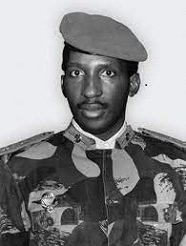
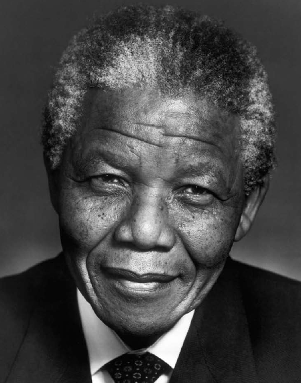
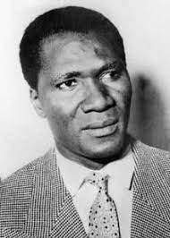
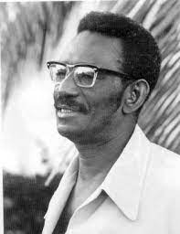
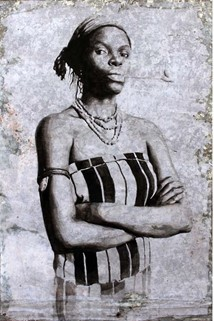

Thomas Sankara
né le 21 décembre 1949 à Yako en Haute-Volta et mort assassiné le 15 octobre 1987 à Ouagadougou,au Burkina Faso
révolutionnaire, socialiste, panafricaniste

Nelson Rolihlahla Mandela
né le 18 juillet 1918 à Mvezo (province du Cap) et mort le 5 décembre 2013 à Johannesburg (Gauteng)
État sud-africain

Ahmed Sékou Touré
né le 9 janvier 1922 à Faranah en Guinée et mort le 26 mars 1984 à Cleveland aux États-Unis
le premier président de la République de Guinée

Doudou N'diaye Rose – de son vrai nom Mamadou N'diaye
né le 28 juillet 19301 à Dakar et décédé le 19 août 2015 dans la même ville2
Musicien percussionniste sénégalais

Cheikh Anta Diop
né le 29 décembre 1923 à Thieytou et mort le 7 février 1986 à Dakar
scientifique de formation, historien, anthropologue, homme politique sénégalais

Aline Sitoé Diatta,aussi appelée la « Reine de Kabrousse »
née en 1920 à Kabrousse, dans le sud du Sénégal, et morte en 1944 à Tombouctou, au Mali
Héroïne de la résistance sénégalaise